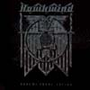
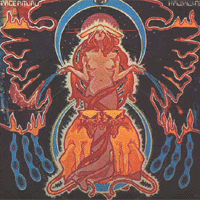
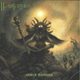
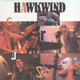
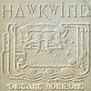
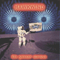

strange music page
overseas * * * hawkwind
#プログレのページ作ろうと思って、最初に書き出したのがHawkwindなんですけど、これって別にプログレじゃないかも。
というかサイケ、というかジャンキー。ベースがリフを弾いてその上にギターを被せて「ピルルルー」とかいうエフェクトが飛び交う.....トリップミュージックです基本的には。
もう長いことやってるバンドなんで、少しずつ音も変わってきてて
最初はサイケ(宇宙の祭典くらいまで)
すこしずつプログレっぽくなってきて(絶体絶命/永劫の神殿)
そのあと効果音が減ってNEW WAVEになって(Live Chronicleくらいまで?)
最近のCDでは人数が減ってトランスっぽくなってます。
21世紀入ってからはヤケクソで、編集盤が死ぬほど出てます。
そして過去に在籍した人を沢山集めてライヴやってたりするらしいです。
ちなみに1994年にNik Turnerの方が(現在分裂状態にあるので)来日しました。
サイコーでした。後にも先にも最前列でヘッドバンキングしたライヴはこれだけです。
D.BrockでもN.Turnerでもイイからまた来日してくれないかなぁ...
|
- HAWKWIND
- Nik Turner
- PINKWIND
|
- Hurry on Sundown
- The Reason Is ?
- Be Yourself
- Paranoia - Part 1
- Paranoia - Part 2
- Seeing It As You Really Are
- Mirror of Illusion
- Dave Brock (guitars,vocals)
- Nik Turner (sax,flute)
- DikMik (electronics)
- Terry Ollis (drums)
- Huw Lloyd-Langton (guitars)
- John Harrison (bass)
#「ドレミファソラシド」って、あんまりなタイトルですけど中身は充実。ライヴで良くやる曲が沢山入っています。ホークウィンドってこの時期はあんまりライヴ盤が良いので、スタジオ盤のイメージは良くないんですけど、よくよく聞くと結構面白いことしてたりします。ドイツエレクトロみたいに、シンセの音ビミョーに変化させていってたり。決してラリラリでヘロヘロなだけのバンドじゃなくって。

- Brainstrom
- Space is Deep
- One Change
- Lord of Light
- Down Through The Night
- Time We Left This World Today
- The Watcher
- Dave Brock (vocals,guitars)
- Nik Turner (vocals,sax,flute)
- Lemmy (vocals,bass,guitars)
- DikMik (audio generator,electronics)
- Del Dettmer (synthesizers)
- Simon King (drums)
ONE WAY RECORDS: COLL-57475
#えーとホークウィンド全盛期のライブ盤です。全篇すごいテンションです、メンバー全員完全にイッてしまっているような演奏です。最高作だと思います、とりあえず聴きましょう。

Disc 1
- Earth Calling/Born To Go
- Down Through The Night
- The Awakening
- Lord of Light
- Black Corridor
- Space is Deep
- Electronic No.1
Disc 2
- Orgone Accumulator
- Upside Down
- 10 Seconds to Forever
- Brainstorm
- Seven by Seven
- Sonic Attack
- Time We Left This World Today
- Master of The Universe
- Welcome to The Future
- Robert Calvert (vocals)
- Dave Brock (guitars,vocals)
- Lemmy (bass,vocals)
- Nik Turner (sax,flute,vocals)
- DikMik (audio generator)
- Del Dettmar (synthesizer)
- Simon King (drums)
ONE WAY RECORDS: S22-57659 (original release 1973 - UA RECORDS)
#Michel Moorcock参加で彼の小説のイメージがよく出ていて、ストーリー性のあるアルバムになっています。結構ライブでも演奏される1、2曲目やトリップ感の気持ちいい8曲目など良い曲が多く収録されています。オリジナルは見開きのジャケットだったようです。元High TideのSimon Houseの加入でプログレ色もだいぶ強いです。メロトロンも使っていますし。
- Assult and Battery Part I
- The Golden Void Part II
- The Wizard Blew His Horn
- Opa-Loka
- The Demented Man
- Magnu
- Standing at The Edge
- Spiral Galaxy 28948
- Warriors
- Dying Seas
- Dave Brock (guitars,synthesizer,vocals)(bass on 4.)
- Nik Turner (saxes,flute)(vocals on 7.10.)
- Lemmy (bass)
- Simon House (mellotron,piano,synthesizer,violin)
- Simon King (drums,percussions)
- Allan Powell (drums,percussions)
- Mike Moorcock (voice on 3.9.)
#えっと前作に引き続き、シンフォ色の強いアルバムです。なんかもうドラマチックですらあります、ホークウィンドのくせに。S.Houseとかのせいで音がとても分厚くなってます。
- The Psychedelic Warlords
- Wind of Change
- D-Rider
- Web Weaver
- You'd Better Believe It
- Hall of the Mountain Grill
- Lost Johnny
- Goat Willow
- Paradox
- Dave Brock (guitars,synthesizers,organ,vocals)
- Lemmy (bass)(vocals on 7.)
- Simon House (keyboards,mellotron,violin)
- Nik Turner (sax,oboe,flute,vocals)
- Del Dettmar (keyboards,synthesizers,kalimba)
- Simon King (drums)
ONE WAY RECORDS: S21-57660 (original released 1974,EMI Records)
#あのGinger Bakerが参加した唯一のアルバムです。元GongのTim Blakeも加え強力なアルバムになっています。曲もHawkwindにしては結構複雑な構成のものもあり、プログレッシヴハードロックみたいな感じです。あまりサイケな感じはせず、一番ハードロックに近づいていた時期だと思います。
- Levitation (宇宙遊泳)
- Motor Way City
- Psychosis (錯乱状態)
- World of Tiers (段層の世界)
- Prelude
- Who's Gonna Win The War (戦いの勝利者)
- Space Chase
- The 5th Second of Forever (from the film)
- Dust of Time
- Dave Brock (guitars,synthesizers,vocals)
- Huw Lloyd-Langton (guitars)
- Harvey Bainbridge (bass,vocals)
- Tim Blake (keybaords,synthesizers)
- Ginger Baker (drums)
#これはーちょっと地味かも....と思って今聴きなおしたら、そうでも無かったです。やっぱりHawkwindは常にHawkwindみたいです。でもなんか変な編成ですけど、誰だMadam Xって？
- Angel Voices
- Nuclear Drive
- Star Cannibal
- The Phenomenon of Luminosity
- Fall of Earth City
- The Church
- Identimate
- Some People Never Die
- Damage of Life
- Experiment with Destiny
- Mists of Meridin
- Looking in the Future
- The Joker at the Gate
- Light Specific Date
- The Lost Messiah
- Dave Brock (guitars,synthesizers,keyboards)
- Havey Bainbridge (bass on 5.10.12.13.14.)(synthesizers on 5.10.14.15.)
- Huw Lloyd-Langton (lead guitar on 2.3.5.6.12.)
- Martin Griffin (percussions n 2.3.5.10.12.14.)
- Marc Sperhawk (bass on 8.)
- Capt. Albodi (percussions on 8.)
- Madam X (voice on 15.)
- Alan Davey (bass,keyboards on 11.)
- Richard Chadwick (percussions on 11.)
Dojo: DOJO-CD86 (original released 1975,Hawkdiscs)
#1-7までが1980年のライヴ。8.9.は84年のライヴです。
特に1曲目が好きなんですよねー、キーボードの音がしょぼいんですけど、なんつーか勢いが有って。
- Psy-Power
- Levitation
- Circles
- Space Chase
- Death Trap
- Angels of Death
- Shot Down In The Night
- Stonehenge
- Watching The Grass Grow
- Dave Brock (vocals,guitars,keyboards,synthesizer)
- Huw Lloyd-Langton (guitars,vocals)
- Harvey Bainbridge (bass,keyboards,synthesizers,vocals)
- Nik Turner (sax,vocals)
- Keith Hayle (keyboards 1-7.)
Ginger Baker (drums on 1-7.)
- Danny Thompson (drums 8.9.)
- Alan Davey (bass,vocals 8.9.)
ANAGRAM RECORDS: CDM-GRAM-54 (original release 1984)
#このライヴ盤も結構好きです。ムアコックのエルリック・サーガっていう小説がネタ元になっていて、ムアコック自身も参加してたりします。
2枚組でボリュームも十分、スピード感も有ってキモチ良いです。「Angels of Death」とかかっちょいいなとか。
- The Chronicle of The Black Sword
- Song of The Swords
- Dragons & Fables
- Narration
- The Sea King
- Dead God's Homecoming
- Angels of Death
- Shade Gate
- Rocky Paths
- Narration (Elric The Enchanter Part One)
- Te Pulsing Caven
- Master of The Universe
- Dragon Song
- Choose Your Masques
- Fight Sequence
- Sleep of A Thousand Tears
- Zarozinia
- Lords of Chaos
- The Dark Lords
- Wizards of Pan Tang
- Moonglum (Friend without A Cause)
- Elric The Enchanter Part Two
- Needle Gun
- Conjuration of Magnu - Magnu
- Dust of TIme
- The Final Fight
- Horn of Fate (Destiny)
- Dave Brock (vocals,guitars,synthesizers)
- Harvey Bainbridge (synthesizers,keyboards,voice)
- Huw Lloyd-Langton (guitars,vocals)
- Alan Davey (bass,backing vocals)
- Danny Thompson (drums)
- Michael Moorcock (voices)
GRIFFIN MUSIC: GCDHA-0136-2
#何か変な編成のアルバム...というかいろいろな寄せ集めのアルバムかも知れないです。その割には1曲目からテンションが高いです。
- Turner Point
- Waiting for Tomorrow
- Cajun Jinx
- Solitary Mind Games
- Starflight
- Ejection
- Assassins of Allah
- Flight to Maputo
- Confrontation
- 5/4
- Ghost Dance
- Codd Languages
- Warrior on The Edge of Time
- Dave Brock (vocals,guitars,keyboards,synthesizers)
- Harvey Bainbridge (vocals,keyboards,bass,percussions)
- Huw Lloyd-Langton (vocals,guitars)
- Alan Davey (vocals,bass)
- Danny Thompson (drums,balloon)
- Martin Griffin (drums)
- Nik Turner (sax)
- Paul Cobbold (organ)
#あまりテンションは高くないです、というかいつも通りのHawkwindです。何故か国内CDがテイチクから出ています。このアルバムを最後にHuw Lloyd-Langtonが抜けているみたいです。個人的にはやる気の無さそうなギターソロとか結構好きだったので残念です。
- The War I Survived
- Wastelands of Sleep
- Neon Skyline
- Lost Chronicles
Tides
- Heads
- Mutation Zone
- E.M.C.
- Sword of The East
- Good Evening
- Dave Brock (vocals,guitars,keyboards,synthesizers)
- Harvey Bainbridge (vocals,keyboards,synthesizers)
- Huw Lloyd-Langton (guitars)
- Alan Davey (bass,vocals)
- Danny Thompson (drums,percussions,vocals)
#1曲目、格好良いです。しかもHawkwindなのにスマートに格好良いです。ただアルバム全体としては曲ごとにばらつきがあるような感じです。drumsが打ち込みみたいな感じに聞こえてしまうのがちょっと難かも。
そうそう、B.Wishartは女性ボーカルです。ホークウィンドに女性ってStacia以来なのかな？あんまり違和感ないですけど。

- Images
- Black Elk Speaks
- Wings
- Out of The Shadows
- Realms
- Ship of Dreams
- T.V. Suicide
- Bridgett Wishart (vocals)
- Dave Brock (vocals,guitars,keyboards)
- Harvey Bainbridge (keyboards,vocals)
- Simon House (violin)
- Alan Davey (bass,vocals,synthesizers)
- Richard Chadwick (drums,percussions)
#1991のライヴかな？スタジオにしては雑なような.....いつもこんなもんか。でも、やっぱしVoid Of Golden Lightとかカッコいいですね。
- Back In The Box
- Treadmill
- Void Of Golden Light
- Lives Of Great Man
- Time We Left
- Heads
- Acid Test
- Damnation Alley
- Bridgett Wishart (vocals)
- Dave Brock (vocals,guitars,keyboards)
- Alan Davey (bass,vocals)
- Richard Chadwick (drums)
- Simon House (violin)
CASTLE COMMUNICATIOINS: CLACD-303 (original release 1991 - GWR)
#1990.12.16のカリフォルニアでのライヴ、74分を超えるたっぷりの内容です。この時期ってちょっと音薄めでそんなに好きじゃないんですけど、何で買ったかというと付録で本が付いてきまして"THE ILLUSTRATEDE COLLECTOR'S GUIDE TO HAWKWIND"という、タイトルそのまんまの本です。1992位までのHAWKWINDの完全なディスコグラフィとか参加メンバーなどが網羅されてます。この本読めばこんな不完全なちゃちいページ見る必要無いです。(関係ないですけど日本語のHAWKWINDのページって誰かやってる方いらっしゃるんですかね？見た事無い....)

- Voids End
- Ejection
- Brainstorm
- Out Of The Shadows
Eons
Night Of The Hawks
- TV Suicide
Back In The Box
Assassins Of Allah
- Propaganda
- Reefer Madness
- Images
- Dave Brock (guitars,keyboards,vocals)
- Alan Davey (bass,vocals)
- Richard Chadwick (drums,vocals)
- Bridgette Wishart (vocals)
- Harvey Bainbridge (keyboards,vocals)
CYCLOPS: CYCL-021 (1994/original relase 1992 - HAWKDISCS)
#長いタイトルですが、1993年のアルバムです。3人編成ですが、結構良いです。Gimme Shelterをカバーしてます。63分、ちょっと長いような気もしますが、Hawkwindなので許しましょう。相変わらずあまり頭良さそーな音楽じゃないですけど、昔よりスマートな印象を受けます。でも曲タイトル"Tibet is not China"とか有るし、やっぱダメかも。
- It is the Business of the Future to be Dangerous
- Space is their (Palestine)
- Tibet is not China (Part 1)
- Tibet is not Chine (Part 2)
- Let Barking Dogs Lie
- Wave upon Wave
- Letting in the Past
- The Camera that could Lie
- 3 or 4 Erections in the Course of a Night
- Techno Tropic Zone exists
- Gimme Shelter
- Avante
- Dave Brock (vocals,guitars,keyboards,synthesizers)
- Alan Davey (bass,backing vocals,wave sequence,synthesizers)
- Richard Chadwick (drums,percussions)(vocals on 11.)
Essential Records: ESSCD-196 (1993)
#いやー、久々の快作です。まずジャケットからしてキてますから。Ron Treeっていうvocalの人が入ってます、あんまりこの人の入った影響ってのは感じないですけど。
ピロピロ音も増えてますし、何と言ってもD.Brockのギターの占める割合が増えたのが非常に良いです。9曲目なんて往年を感じさせるノリです、やっぱりHawkwindサイコーですね。
- Abducied
- Alien (I am)
- Reject Your Human Touch
- Blue Skin
- Beam Me Up
- Vega
- Xenomorph
- Journey
- Spumik Star
- Kapal
- Fesnvals
- Dream Trap
- Wastelnds
- Are You Losting Your Mind ?
- Dave Brock (guitars,vocals,keyboards,synthesizers,FX)
- Alan Davey (bass,vocals,synthesizers,sequencer,FX)
- Richard Chadwicks (drums,percussions)
- Ron Tree (vocals)
Emergency Broadcast System: EBSCD-118 (1995)
#いつのまにかbassのAlan Daveyが抜けて、新しくJerry Richardsという人が入っています。基本的には相変わらずテクノでサイケなんですが、少し80年代の頃の音に戻ったような印象もあります、ちょっと地味かな？
旅行中に札幌のタワレコで買いました。っていうかこれ以降、新しいの出てるはずなんですけど....どこへ行っても見つからないです。

- Distant Horizons
- Phetamine Street
- Waimea Canyon Drive
- Alchemy
- Clouded Vision
- Reptoid Vision
- Population Overload
- Wheels
- Kauai
- Taxi for Max
- Love in Space
- Dave Brock (guitars,vocals,keyboards,synthesizers,FX)
- Richard Chadwick (drums,percussions)
- Ron Tree (vocals,bass,audio generator)
- Jerry Richards (guitars,vocals,keyboards,programming)
Emergency Broadcast System: EBSCD-139 (1997)
#新宿ディスクユニオンにて、出てるのは知ってたんですけど、全然見かけなかったHAWKWINDの新譜です、即買い。
でもスタジオの完全な新譜ってわけではなくて、1-6.がライヴ録音。んでスリーヴの表記だと14曲なんだけど、CDプレイヤーだと12曲....えええと、たぶんライヴの所が間違ってるみたい。
まぁ一曲目から"Brainstorm"っちゅう事で、前作よりはヘロヘロ度が上がって(ほめてる所)イイ感じです、なんだかダサダサなレゲェがたまーに入るのも愛嬌かなと。
これ以降は新録音のCD出てないんですよね、HAWKWIND。怪しいライヴ盤やコンピ盤は結構出てるみたいなんですけど.....早く、新録だして欲しいです。で、来日してください。

- Brainstorm
- Hawkwind In Your Area
- Alchemy
- Love in Space
- Rat Race
- Aerospace Age Inferno
- First Landing on Medusa
- I am the Reptoid
- The Nazca
- Hippy
- Prairie
- Your Fantasy
- Luxotica
- Diana Park
- Dave Brock (vcoals,guitars,keyboards,synthesizers)
- Richard Chadwick (drums,percussions,computer)
- Ron Tree (vocals,bass)
- Jerry Richards (guitars,keyboards)
- Capt.Rizz (vocals)
- Crum (keyboards)
VOICEPRINT/HAWK RECORDS: HAWKVP17CD (original release 1998)
#1994年のライヴとは思えないメンツです。何故か元Throbbing Gristle,Psychic T.V.のGenesis P.Orridgeが参加しています。元chromeのHelios Creedも結構はまっています。内容の方も非常に充実しています、Space Ritualのタイトルは伊達じゃないです。また、この後にNik Turner's Hawkwind名義で初来日を果たしました。その時はSimon HouseもAlan Powellも引き連れて、とても興奮したのを覚えています。
- Ghost Dance
- Watching The Grass Grow
- D-Rider
- Master of The Universe
- Sonic Attack
- Thoth
- King
- God Rock/Slo-Blo
- Serenade
- Utopia 2000
- Brainstorm
- Ejection
- The Awakening
- The Right Stuff
- Armour for Everyday
- Nirbasion Annasion
- You Shouldn't Do That
- T.V. as Eyes
- Orgone Accumulator
- Silver Machine
- Nik Turner (vocals,sax,flute,poetry)
- Helios Creed (guitars,backing vocals)
- Del Dettmar (VCS3 wood axe synth.)
- Len Del Rio (synthesizers,moog,tronics,tapes,percussions)
- Tommy Grenas (rhythm guitars,vocals)
- Paul Fox (bass,vocals,percussions)
- Paul Della Pelle (drums,percussions)
- Genesis P.Orridge (vocals on Disk2-4.)
- Allan Powell (percussions)
#Pink Floyd + Hawkwind....じゃないですよ。Pink Fairies + Hawkwind(っていうかN.Turner)
1993.8.30のライヴらしいです(1曲目だけ1994.4.9のライヴ)
音質もあんまり良く無いし、演奏もヘロヘロ(これはいつもの事だけど)、ちなみに3曲目は誰か喋ってるだけ、「All Right???」って言われてもねぇ...."Silver Machine"も歌詞変わってます。
ヘロヘロ加減はたっぷり堪能できるんですけど。フツーの感覚をお持ちの方にはオススメできません。500円で良かったと、安心してます。(2000.10.23)
- God Rock
- Cosmic Rock & Roll
- Stonehenge '95
- Silver Machine
- Master of the Universe
- Rainbow Ron
- Call of the Tribes
- Nik Turner (sax,flute,vocals)
- Twink (drums)
- Dani Speakman (guitars,keyboards,vocals)
- Trevor Thoms (guitars,vocals)
- Mike Quartermain (bass)
- Barry Coombs (drums)
- Rick Walsh (trumpet)
TWINK RECORDS: TWK-CD2 (1995)